Mail Cleaner
MailCleaner is a business anti spam gateway installed between your mail infrastructure and the Internet. It offers professional protection against viruses and eliminates up to 99% of spam.
Requirements and planning
Make sure that your hardware or Virtual Machine meets the minimum requirements:
▪ 2 CPU, 4 GB RAM
▪ 60 GB HDD
▪ 100 Mbps network card
▪ 2 Mbps network connectivity
Virtual Machine Download & Installation:
Download the latest MailCleaner Virtual Machine corresponding to your virtualization environment here:https://www.mailcleaner.net/downloads/vm For installation instructions follow the README inside the ZIP file In my case, I had downloaded the appliance of. ova format and imported it to the VMware vSphere. After the successful installation, login to the virtual machine with user ‘root’ and password ‘MCPassw0rd’. After login, there will be asked to complete the wizards. There in the wizard, you need to select the keyboard language, hostname, IP address. You can change the root password later.
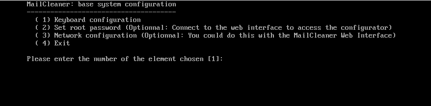
Network environment:
Please have on hand an IP address and a hostname to be dedicated to your MailCleaner. The hostname must be resolvable via DNS. Have a MX record of the IP in public DNS MailCleaner also needs Internet access on a number of ports. Make sure the firewall allows the all the ports required by Mailcleaner like SMTP, TCP, HTTPS, HTTP, LDAP, SSH etc.
Configuration after installation
Once the installation of the Virtual Machine is finished, you can connect your favorite browser to the MailCleaner wizard configurator:https://yourhost:4242 Where your host refers to either the hostname or the IP address. MailCleaner by default is configured for DHCP, so if you have DHCP, it will get an address on your network and you could check your equipment to see what address it got. If you do not have DHCP on your network MailCleaner could be accessible on 192.168.1.42. You can set your own static IP from terminal of while installing the virtual appliance. In the URL mentioned above, you will be redirected to the wizard. Complete the wizard, as per your requirements.
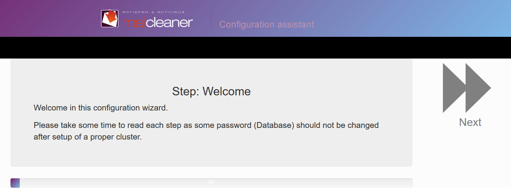
Registration
Registration for enterprises edition:
If you wish to get automatic updates for your MailCleaner, you may want to register with Mail Cleaner’s update service. Once you get the settings back from our service (client id, reseller id/password, etc.), you must connect your favorite browser to the MailCleaner web administration interface:https://yourhost/admin/ Where your host refers to either the hostname or the IP address you provided during the installation. The username is admin and the password is the one provided during the installation. Select “Configuration” menu, “Base system” sub-menu and “Registration” section You must fill all fields of this section with the information provided on your license certificate, by your reseller or directly by MailCleaner Sales Department.
What is your reseller ID?
The reseller ID as assigned by MailCleaner Sales Department.
What is your reseller password?
The password associated with the reseller ID as assigned by MailCleaner Sales Department. What is this client ID The client (or customer) ID as assigned by MailCleaner: 4-digit ID When finished, this step will register your MailCleaner installation with our update service? Available updates will then be fetched every 15 minutes. Anti-virus definitions are updated every hour by default.
Gui Configuration
To activate the mailcleaner, it is required to properly configure the set up followed by mailcleaner GUI.
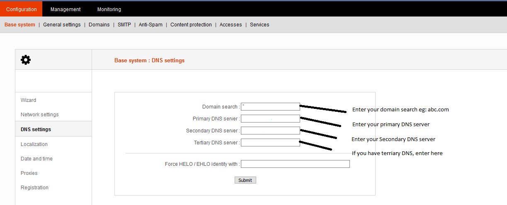
Go to configuration => Base system and configure Network, DNS, Localization, Date and time and Proxies as per your environment.
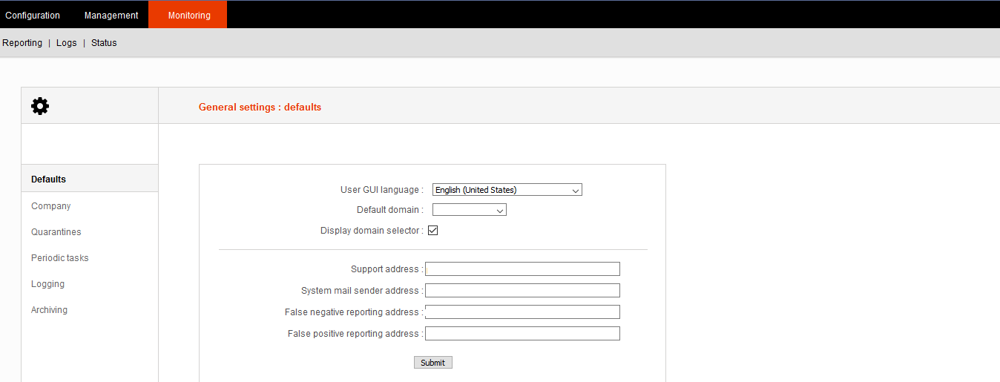
Go to configuration => General settings and configure defaults, Company, Quarantines, Periodic tasks, logging and archiving.
After configuring Base system and General settings, it is more important to configure domains. Adding domain is most critical and backbone of the mailcleaner.
To configure the Domain, follow the below steps. 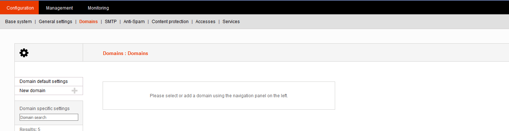
Go to Configuration => Domain, there you will see the Domain default setting and new domain.
If you want the default configuration for all domains, configure in the default domain setting. Else, go to New Domain to add Domains. Add domain and submit. To configure the individual domains, go to list of the domain and select it. 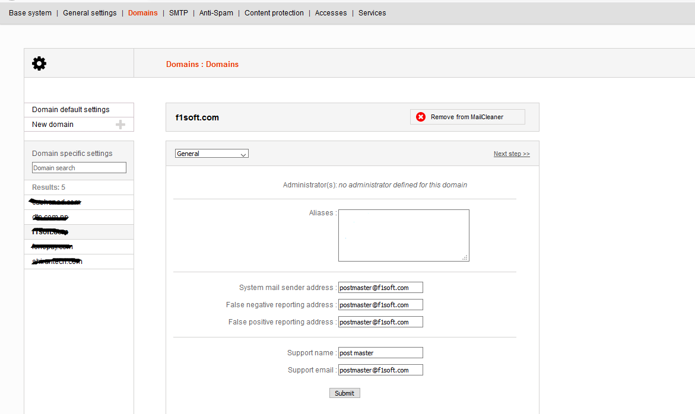 In the General fill the details of Aliases, postmaster address and support details. Submit the details and click next step. 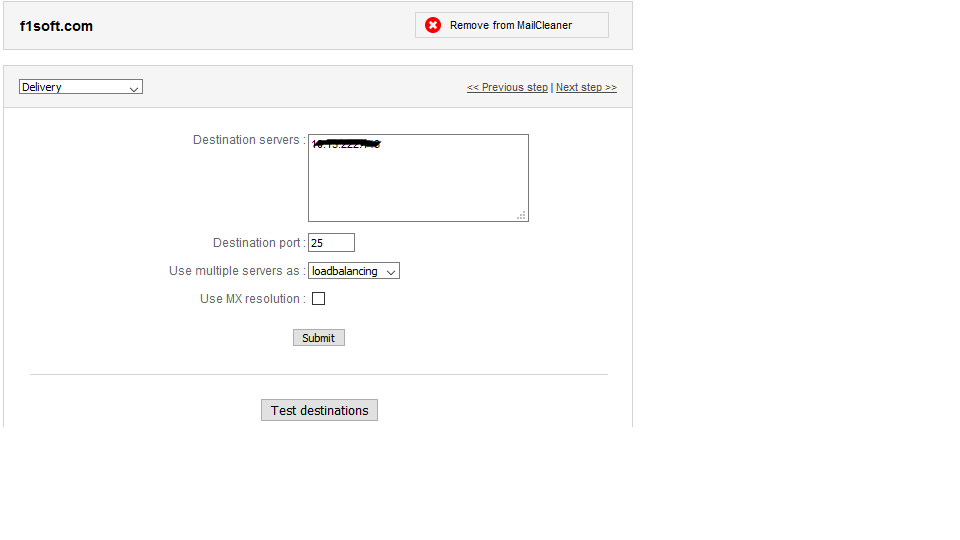
In the Destination server, fill the IP address of the mail server in which mail will be sent from mailcleaner. Choose smtp port as 25 and use multiple server as load balancing. Submit the details and test the destination then go to next step 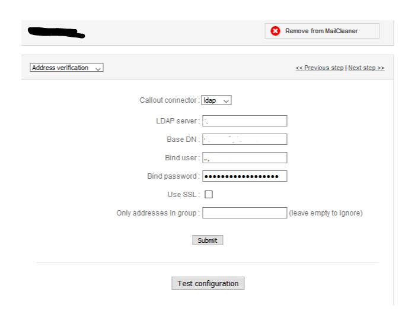 Next step is to configure Address verification. To configure address verification, go to Domain=> Select Domain=>Go to address verification. You will need to configure the following details.
Callout Connector:- This is the method which is used to authenticate the address. Callout connector uses LDAP, SMTP, NONE and LOCAL protocols.
LDAP Server: If you are configuring with LDAP, you will need to define the LDAP server from which LDAP authentication is done.
BASE DN: Base DN uses domain controller for the address verification. If you are using Active directory to address verification, configure the Base DN as following For domain: abc.com.np Dc=abc, dc=com, dc=np
Bind User and Bind Password: Use the user and password of the LDAP server. Submit the details and test configuration.
Go to Next Step and configure Preferences as per your requirement.
In the next step, will be redirected to Users Authentication. Any user defined in this step will authenticate users to the mailcleaner. To configure Users Authentication, follow the following steps.
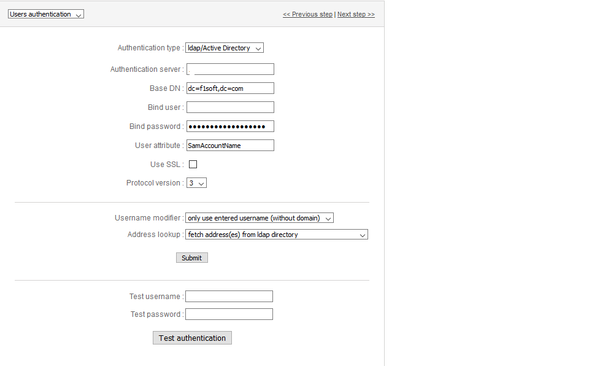
Authentication Type: In the authentication type, we can see different authentication methods to get access. In my case, I have used ldap/Active Directory as an authentication method.
Authentication Server: Define the Authentication Server in this section. In my case, I have defined the IP address of LDAP server as Authentication Server.
BASE DN: Define the domain name from which LDAP users will be authenticated. If you have domain abc.com.np, please select the base DN as: dc=abc, dc=com, dc=np
Bind User: Select the user from LDAP server as bind user. In my case, I have used administrator as bind user.
Bind Password: Use the password of the user from LDAP which is going to be used as bind user.
User Attribute: If you are using ldap/active directory as authentication type, use ‘SamAccountName’ as user attribute.
Configure Use SSL, Protocol version, Username Modifier, Address lookup as in above snapshot and submit the details. After submission test any user from ldap/active directory and test authentication. If the configurations are correct, you will see the connection successful message.
Another step to be configured is Filtering. In this section, you can define the different filtering methods for any domain. Configure the mailcleaner as shown in snapshot. Enable greylisting and whitelisting. If you want to select any domain to be not checked, mention it in the add an address. 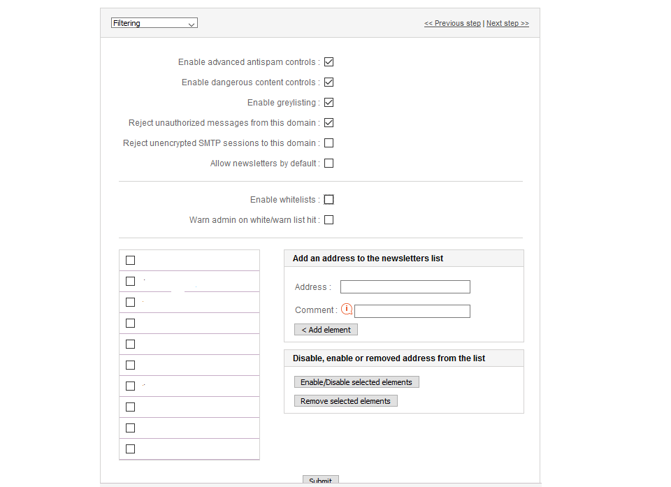 Another step is to configure outgoing relay. In the configuration you will need to generate DKIM signing. 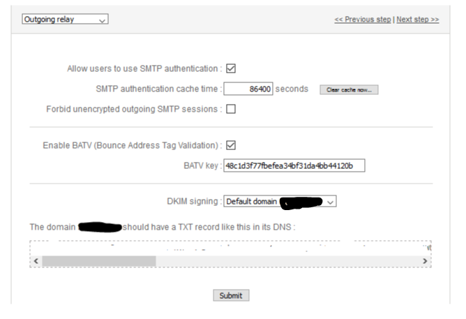 Make a configuration as shown in the above snapshot. You will need to enable BATV to generate DKIM signing. You will need to add this DKIM record to public dns.
Keep the configuration of archiving and templates as per default.
Configure SMTP, Anti-spam, Content protection, accesses and Services as per your requirement.
5. Cluster Creation and Implementation
To filter very large volume of email and/or for security and redundancy reasons, MailCleaner has been developed, from the very beginning, to work in a cluster configuration. One server, defined as the master, holds the database configuration and hosts the administrator and user web interfaces. The other servers in the cluster are defined as slaves. First, install each server independently.
Master Configuration:
Use the script located in: /usr/mailcleaner/scripts/configuration/slaves.pl
-The first time, you will have to set the real hostname of the master. The real hostname is the Fully Qualified Domain Name (FQDN) of the master server. This name must be resolvable by DNS. Alternatively, you can use the master server’s IP address in place of its name.
▪Select option 1(fully qualified hostname or IP). By default, it is 127.0.0.1, which is to be changed in the case of a cluster.
▪Select option 4 to add a slave and enter the hostname or IP address and the password of the server.
▪Back in the main menu, hit q to apply changes.
Slave Configuration:
Use the script located in: /usr/mailcleaner/scripts/configuration/slaves.pl
The first time, you will have to set the real hostname of the slave. The real hostname is the Fully Qualified Domain Name (FQDN) of this slave. This name must be resolvable by DNS. Alternatively, you can use the server’s IP address in place of its name
Select option 1(fully qualified hostname or IP). By default, it is 127.0.0.1.
Select option 5 to set this server as a slave. Enter the master’s FQDN or IP address and password.
Back in the main menu, hit q to apply changes.
You can now reach the admin interface of any server, but only the master will let you configure the system. The master is also the only server that allows users to access their quarantine.
You can now reach the admin interface of any host, but only the master will let you configure the system. It also is the only one that users can reach in order to access their quarantine.
In order to balance your incoming mail on the two (or more) nodes you can add a new MX record with the same priority pointing the second node. To test, go to user interface panel
After clustering, go to URL of master cluster there you will see the stack of master and slaves.
Verify the incoming and outgoing status of mails. 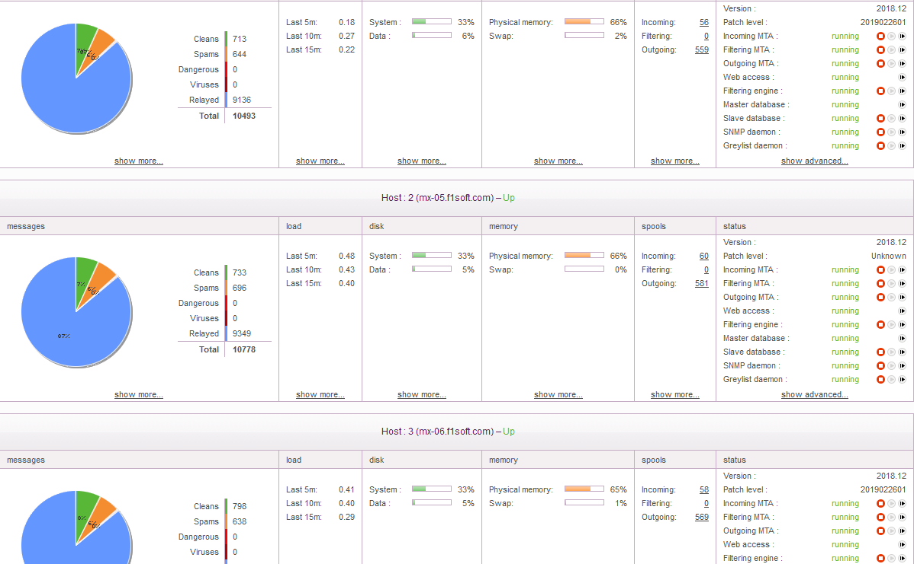
By : Aayush koirala koiralaaayush20@gmail.com